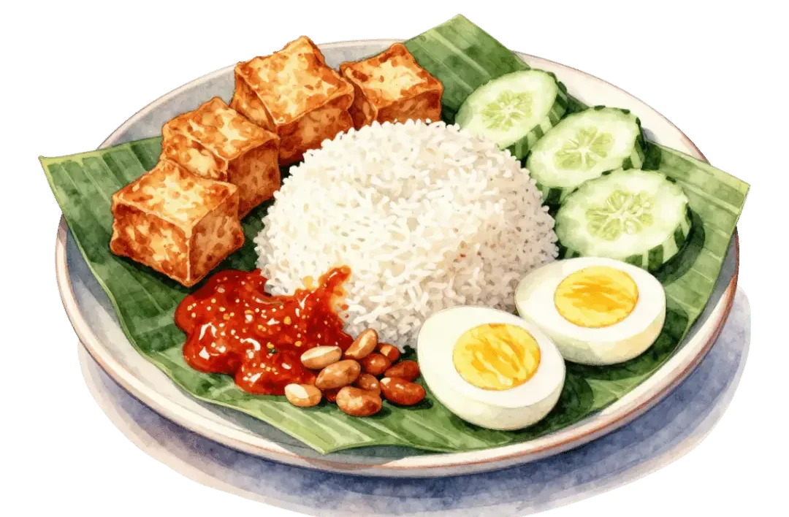
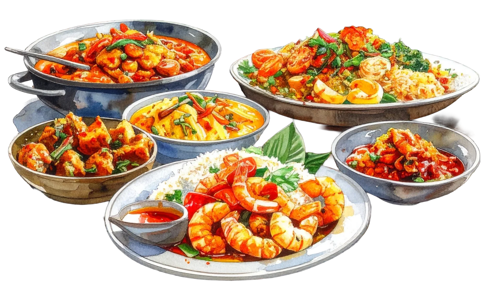
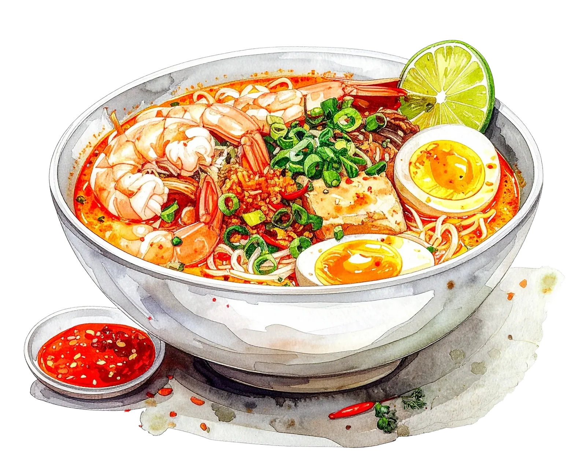

マレーシアってどんな国？
東南アジアの中心に位置するマレーシアは、マレー系・中国系・インド系が共存する多民族・多文化国家。熱帯雨林の大自然、世界遺産の古都、近代的な都市が一度に楽しめるのが最大の魅力です。
Jalur Gemilang（ジャルル・グミラン）― マレー語で「栄光の縞」

年間約40万人の日本人が訪れる人気旅行先。ビザ不要・英語が通じやすい・物価が安いの三拍子が揃い、初めての海外旅行先としても定番。日本食レストランも豊富で食事の心配も少ない。
主要都市
ベストシーズン
年間を通して25〜32℃の常夏。地域によって雨季・乾季が異なります。
基本データ
👤👤👤👤👤👤
1.25億人
3,350万人

37.8万km²
33万km²
ベストシーズン
マレーシアは年間を通して27〜29℃の常夏。地域によって雨季・乾季の時期が異なります。
色が濃いオレンジほど気温が高く、黄金色は比較的涼しい月です。
✅ ベスト：3〜9月（乾季）／ 雨季でもスコール程度で観光可能
✅ ベスト：11〜4月（西海岸の乾季） ／ 9〜10月は北東モンスーンの影響で雨多め
✅ ベスト：1〜5月（乾季・ダイビング最適） ／ 9〜11月は雨季で海が荒れやすい
6〜7月はLCCの航空券が安くなりやすい時期。1月中旬〜3月も比較的ねらい目。年末年始・GW・お盆は高騰するので要注意。
航空券・ホテル・食費・交通費の目安を一覧でチェック。
節約ポイントやお金の持ち方も紹介しています。
旅行費用の目安
費用の内訳
| ✈️ | 航空券（往復）エアアジア・バティックエアなどLCCが安い 早期予約ほど安く、直前は高騰しやすい |
4〜18万円 |
| 🛏️ | ホテル（1泊）ゲストハウス：1,500〜3,000円・中級：4,000〜8,000円 5つ星ホテルでも1〜2万円台が多くコスパ高め |
〜2万円/泊 |
| 🍜 | 食費（1日）ホーカーセンター・屋台なら1食300〜500円 モールのフードコートでも1,000円以内が多い 屋台・市場は現金払いが多いので現地ATMで引き出せるWiseが便利。 |
1,000〜3,000円/日 |
| 🚕 | 交通費（1日）Grabで乗車前に料金確定・ぼったくりなし LRT・モノレールなど公共交通も安くて便利 |
500〜2,000円/日 |
| 📍 | 観光・アクティビティペトロナスツインタワーなど有料スポットも点在 モスク・公園など無料スポットも豊富 |
500〜3,000円/日 |
| 🌐 | SIM・Wi-Fi到着後すぐ空港でSIM購入が便利 短期旅行ならeSIMを出発前に準備しておくのもおすすめ |
500〜1,500円 |
・チップ不要（特別なサービス時のみ任意）
・屋台・フードコートで本格グルメが格安
・Grabアプリはタクシーより安く安心
30カ国以上を旅した管理人が実体験をもとに作った完全版持ち物リストもあります。
旅の実用情報
準備は早めに
入国の3日前からオンライン登録が必要。子供も登録が必要。
URL: imigresen-online.imi.gov.my/mdac/main（2026年5月時点）
航空券の予約
・閑散期（6〜7月）は直前でも安値が出ることがある
・複数サイトを比較して最安値を見つけよう
ホテルの選び方
初めてのKLはブキッビンタン〜KLCC周辺が移動に便利。ペナン・マラッカはジョージタウン・オランダ広場周辺に泊まると徒歩観光しやすい。
持ち物チェック
- 変換アダプター（BFタイプ・三又）
- 日焼け止め（強烈な熱帯の日差し対策）
- 折りたたみ傘（スコール対策）
- 薄手の羽織もの（冷房対策）
- 虫除けスプレー（デング熱を媒介する蚊が多い）
- モスク用スカーフ（女性・見学時／現地調達も可）
事前にDLすべきアプリ
両替・支払い
屋台やローカル市場ではお釣りが出ないことが多い。両替時は大きな紙幣だけでなく、1RM・5RM・10RMの小額紙幣を多めに用意しておくとスムーズ。
1 MYR ≈ 33円で計算 ／ 節約 50・標準 100・ゆとり 200 MYR／日
SIM・Wi-Fi
現地ツアー・アクティビティ
イスラム教の国ならではのマナーを知っておくと現地での行動がスムーズ。
モスク見学・食事・服装など旅行者が知っておくべきポイントをまとめました。
文化・マナー
マレー語・中国語・タミル語の簡単なフレーズ集。
挨拶ひとつで現地の人の反応がぐっと変わります。
現地交通ガイド
マレー語 旅行フレーズ集
| 日本語 | マレー語 / 読み方 | |
|---|---|---|
| 👋 あいさつ | ||
| こんにちは | Selamat siangスラマッ シアン | |
| 元気ですか？ | Apa khabar?アパ カバル？ | |
| 元気です。あなたは？ | Khabar baik. Awak?カバル バイク。アワッ？ | |
| バイバイ | Selamat tinggalスラマッ ティンガル | |
| 綺麗ですね！ | Cantik sekali!チャンティッ スカリ！ | |
| 🙏 基本表現 | ||
| ありがとう | Terima kasihトゥリマ カシ | |
| ごめんなさい | Minta maafミンタ マーフ | |
| 大丈夫 | Tidak apa-apaティダッ アパアパ | |
| はい / いいえ | Ya / Tidakヤー / ティダッ | |
| 名前は〜です | Nama saya ～ナマ サヤ ～ | |
| 名前は何ですか？ | Siapa nama awak?シアパ ナマ アワッ？ | |
| 🍽️ レストラン・ショッピング | ||
| おいしい！ | Sedap!スダッ！ | |
| おすすめは？ | Apa yang disyorkan?アパ ヤン ディショルカン？ | |
| 辛くしないでください | Jangan pedasジャンガン プダス | |
| お会計お願いします | Boleh minta bil?ボレ ミンタ ビル？ | |
| いくらですか？ | Berapa harga ini?ブラパ ハルガ イニ？ | |
| トイレどこですか？ | Di mana tandas?ディ マナ タンダス？ | |
| これください | Saya nak iniサヤ ナッ イニ | |
| 高い、安くしてください | Mahal, boleh murah sikit?マハル、ボレ ムラ シキッ？ | |
| 🔢 数字 | ||
| 0 | Kosongコソン | |
| 1〜5 | Satu・Dua・Tiga・Empat・Limaサトゥ・ドゥア・ティガ・エンパッ・リマ | |
| 6〜10 | Enam・Tujuh・Lapan・Sembilan・Sepuluhエナム・トゥジュ・ラパン・スンビラン・スプル | |
🃏 マレー語 単語カード
旅行前にフレーズをマスターしよう！
印刷できる単語カードを販売中。
マレーシア グルメ

Wikipedia →
Wikipedia →安定タイプ・冒険タイプ2種類のモデルコースを用意。
管理人の実際の旅ルートもそのまま公開しています。
都市別観光スポット
各都市の名物料理から定番スイーツ・ドリンクまで。
食べてみたいものをここで探して旅の計画に加えよう。
モデルコース
旅のスタイルに合わせた2タイプのモデルコースを紹介。初めてのマレーシアでも安心な連泊プランから、マレー半島を丸ごと味わう縦断ルートまで。どちらもアレンジ自由です。
KLIAエクスプレスで約28分、KLセントラルへ。ホテルに荷物を預けたらそのまま夜のジャランアローへ。屋台がずらりと並ぶ活気ある通りで、チキンウィングや炒麺をつまみながらKLの夜を満喫。
早起きしてバトゥケーブスへ。272段のカラフルな階段を上ると巨大なヒンドゥー聖地が広がる。午後はチャイナタウンのペタリン通りでお土産探し、セントラルマーケットで工芸品をチェック。
KLのシンボル、ペトロナスツインタワーへ（要早めの予約）。KLCC公園の噴水ショーを見てから、ブキッビンタンへ移動。ショッピングモールをはしごして夜景でKLを締めくくる。
約2h
世界遺産の古都へ日帰り旅。赤いオランダ広場・キリスト教会を見てから、ジョンカーストリートを散策。ポルトガル・中国・マレーが融合したニョニャ料理でランチ。カラフルなトライショーに乗るのもおすすめ。夕方KLへ戻る。
約2h
午前中は最後のKL散策やお土産購入。KLIAへ移動して帰国便へ。
チェックイン後、夜のチャイナタウンへ。提灯が灯るペタリン通りの夜市は雰囲気満点。屋台でナシレマや揚げ豆腐をつまみながら、マレーシアの多文化な空気を最初の夜から体感できる。
朝イチでバトゥケーブスへ。午後はKLCCへ移動してペトロナスツインタワーへ（要早めの予約）。夜はスカイブリッジから見るKLの夜景が圧巻。
午前中はブルーモスクとピンクモスクへ。マレーシアが誇る2大モスクを同じ日に訪れる贅沢なルート。夕方、国内線でペナンへ飛ぶ。
約1h
世界遺産の旧市街を丸一日かけて歩く。壁画アートを探しながら路地を散策し、屋台街でペナングルメを食べ歩き。アッサムラクサ・チャークイティオ・エッグタルトは絶対に外せない。
ケーブルカーでペナンヒルへ。頂上からはジョージタウンと海が一望できる絶景。午後はバトゥフェリンギビーチへ移動して、夕暮れまでゆったり過ごす。
午前中は行けなかったスポットを再訪したりお土産を購入。ペナン空港または夕方の便でKL経由で帰国の途へ。
このルートは管理人がお盆休みに実際に旅したコースです。SIMなしのスマホをカメラ＆オフライン地図として使いながら、地元の人に聞いて移動するスタイルで南下しました。観光地化されていないローカルエリアを通るからこそ、ガイドブックには載らない出会いや景色があります。計画通りにいかないことも含めて旅だと実感できる、そんなルートです。
直行便で約7時間。ジョージタウン旧市街を散策・ペナン名物のアッサムラクサで夕食。午後2〜3時には観光を切り上げ、フェリーで対岸のバターワースへ渡り、そこからバスでスンガイペタニへ移動。
＋🚌
観光地ではないが、ローカルな生活が息づく町。屋台で肉まんを買ったら売っていたのはインド系のおじさん。マレー・中華・インドが入り混じるマレーシアらしさをここで実感した。地元の人にベトン方面へのバス乗り場を教えてもらったが、待てど暮らせどバスが来ず、スコールまで降り始めたので諦めてタクシーに乗車した。
約3〜4h
雲海を目当てにレンタルバイクで山を上るも、Googleマップが機能せず道に迷い辿り着いたのがドリアン農園。農園のおっちゃんに案内してもらい、雲海の上に広がるドリアン畑という絶景を体験。
約3〜4h
マレーシアに再入国。コロニアル建築が残る旧市街を散策し、洞窟寺院も訪れた。イポー名物の白咖啡（ホワイトコーヒー）は必食。
約2h
ブルーモスクとピンクモスクへ。ペトロナスツインタワーは直前に予約しようとしたら空きがなく断念。行く予定のある方は早めの予約を強くおすすめします。
約4h
本当はそのままシンガポールまで突っ切りたかったが時間的に断念し1泊。夜はシーフードを食べたが、これが正解だった。翌朝コーズウェイを渡り陸路でシンガポールへ入国。
徒歩
チャンギ空港から帰国便へ。
雨季・乾季・地域別のベストシーズンをチェック。
日程が決まっていない人はここから逆算するのがおすすめ。